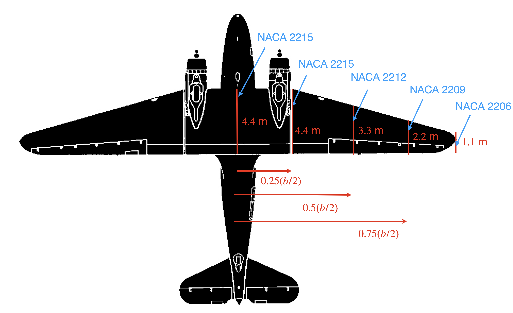

due 9/25/2024 before midnight via Learning Suite 25 possible points
Now that we can evaluate the aerodynamic performance of airfoils we can improve our drag estimation. For this analysis we will use the Douglas DC-3, a very successful plane that helped make air travel popular in the U.S. Some key specs, dimensions, and airfoil schedule are below.
| wing span | 29 m |
| takeoff mass | 11,000 kg |
| cruise speed | 93 m/s |
| cruise altitude | 10,000 ft |

Watch the following XFLR5 videos: The first 4:30 of design a plane, and plane analysis. We will do something similar later, but for this specific analysis I’d use type 1 (fixed speed), \(V_\infty\) is irrelevant (since we’re just looking at normalized quantities in this problem), viscous is not needed, and inertial properties are also irrelevant.
Create a wing patterned after the DC-3 wing above, but for simplicity, you can make it a simple trapezoidal (i.e., just define two sections: a root chord of 4.4 m and a tip chord of 1.1 m). Since we don’t know the twist, let’s leave both at zero. Because we will run an inviscid analysis the specific airfoil is irrelevant, but the program might make you put one in anyway.
The view we are interested in is the furthest left button (called OpPoint View). If you right click on a graph and click Current Graph then Define Graph Settings you can alternate between plotting lift (\(c_l \cdot c / mac\)) and the lift coefficient.
Provide the following: